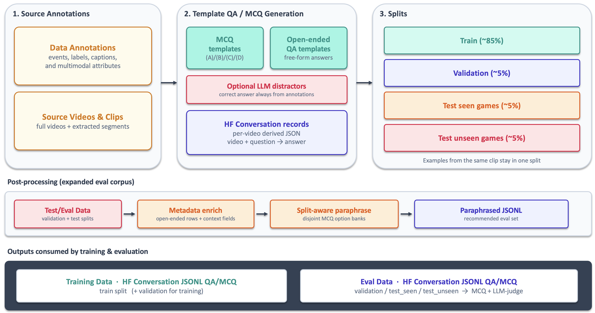

Data Curation#
This section documents how to annotate sports video data and convert those annotations into training datasets for multimodal language models. It covers annotation guidelines, the data preparation pipeline, and where to find example code in the sports_intelligence repository. The workflow below uses tennis as the worked example, but the same curation principles—structured event labels, dense captions, and template-driven Q&A generation—apply to other sports with sport-specific schemas and templates.
Example Tennis Annotation Guideline#
The tennis-specific guideline below uses the point as the core unit of annotation. It defines the information recorded for each point, including game context, outcomes, timestamps, and descriptive narratives needed for multimodal training.
Tennis Annotation Guideline (PDF) — a step-by-step guide for point-by-point annotation of full tennis match videos, including game context, segment timestamps, and dense captions.
Meaningful action in sports can be organized around points, plays, possessions, periods, laps, or rounds. Annotation design therefore starts by choosing an event unit that preserves enough visual, audio, and temporal context to support the questions a model should answer. Although fields and terminology differ by sport, strong datasets share the same foundation: precise event boundaries, structured facts, grounded descriptions, and consistent quality control.
From Tennis Annotation to Training Data#
After match videos are annotated following the guideline above, each match is exported as one JSON file per video (for example, sample_video_001.json). Those files list match metadata (player names, segment bounds) and a table of point-level rows: server/receiver, winner, scores, how the point ended, play-by-play captions, audio cues, per-point clip paths, and related fields.
The tennis data-prep pipeline below shows how to turn that structure into supervised (video, question, answer) examples suitable for model fine-tuning. The reference implementation lives in avlm/data_prep_example/tennis/ in the sports_intelligence repo. You can adapt the same pattern for other sports by defining sport-specific templates and configs.
Each annotated point becomes many training rows: one row per question template.
Pipeline Overview#
The figure shows how source annotations and video clips become template-based QA/MCQ records, point-level splits, metadata-enriched and paraphrased evaluation data, and final training and evaluation JSONL.
{kind=link}

What the Generators Do#
generate_mcq_qa.py handles the default templates, while generate_categorical_mcq_qa.py handles categorical evaluation. Both walk every point in the raw JSON and apply named templates from configs/:
tennis_mcq_config.json— multiple-choice questions (server/winner, score, rally length, how the point ended, …)tennis_qa_config.json— open-ended QA (point caption, how the point ended, audio cues)tennis_categorical_eval_config.json— categorical MCQ/QA with evaluation metadataquestion_types.json— optional allow-list of template names (omit to generate all)
Each template specifies which annotation field supplies the ground-truth answer, the question text (with placeholders such as <player1> and <score_before> filled from metadata), and a type that controls how options are built:
categorical — the template defines a fixed list of multiple-choice options in the config (for example, the four server/winner combinations, or the set of “how the point ended” categories). The generator reads the annotated field, picks the matching option as the correct answer, and presents the full predefined list as the MCQ choices.
numeric_range — the annotated field is a number (for example,
num_shots_exchanged). The template maps numeric intervals to labeled answers (for example, 1 → “1 shot”, 2 → “2 shots”, 11–20 → “11–20 shots”). The generator finds which interval contains the annotated value and uses the corresponding label as the correct answer; the other interval labels are the distractors.open_ended — assistant reply is the annotation field verbatim
llm_gen_distractor — MCQ where the correct option is still the annotated text, but three wrong options are written by an LLM (mcq_* templates only)
For each point the generators: (1) resolve placeholders, (2) pick or derive the correct answer, (3) shuffle MCQ options, and (4) emit a HuggingFace conversation record with the point’s relative video path, question/answer text, and a class field set to the template name (for example server_winner or score_after).
Most templates are fully deterministic and need no LLM. Only the legacy mcq_* distractor templates call an API (openai + python-dotenv; API key in a local dev_local.env); the current categorical config requires no LLM.
Categorical Evaluation Mode#
Categorical mode generates 39 templates (37 MCQ and 2 QA) across visual recognition, commentary, match facts, rules/reasoning, and audio:
python prepare_training_data_pipeline.py \
--mode categorical \
--input-dir raw_tennis_data_input \
--output-dir training_tennis_data_output/categorical \
--video-root ""
It writes generated/, with_metadata/, and the recommended with_metadata_paraphrased/ output. Metadata adds point-level annotations needed for open-ended evaluation, while split-specific paraphrasing tests whether evaluation performance generalizes beyond memorized MCQ wording. Rules questions are annotation-triggered and capped at two per point. See the categorical taxonomy and rules trigger map.
Train / Validation / Test Splits#
split_dataset.py assigns points (not individual questions) to splits so every Q&A derived from the same point stays together:
train / validation — points from seen matches
test_seen_videos — held-out points from a seen match (generalization within a known game)
test_unseen_videos — points from a fully held-out match (generalization to new players/context)
Point-level grouping also prevents leakage when the same annotation field is expressed through multiple templates: placing one version in training and another in evaluation could produce spuriously high accuracy for that field. More broadly, multiple forms of the same field are useful only when they test distinct capabilities; otherwise they are redundant and obscure what the measured accuracy represents.
Output Format#
Final artifacts are JSONL files under training_tennis_data_output/data_splits_hf/. Each line is one (video, question) pair. The class field carries the question-type / template name the row was generated from (for example server_winner, score_after); eval tooling uses it to route MCQ vs descriptive scoring (see Evaluation).
{
"id": "sample_video_001_ServerWinner_6f7b9d82-...",
"class": "server_winner",
"evaluation_type": "mcq",
"super_category": "Match Facts",
"fine_category": "Point Roles and Outcome",
"conversation": [
{
"role": "user",
"content": [
{"type": "video", "path": "sample_video_001/sample_video_001_seg_01_13_19_timeoffset_end_3.mp4"},
{"type": "text", "text": "Who served and who won...?\n(A) ...\n(B) ...\n(C) ...\n(D) ..."}
]
},
{
"role": "assistant",
"content": [{"type": "text", "text": "(A) Carlos Alcaraz served and Carlos Alcaraz won"}]
}
]
}
Open-ended QA rows omit the (A)/(B)/... options; the assistant message is the annotation field directly.
For server_winner and receiver_winner templates, MCQ options list all four server/receiver × winner player-name combinations (for example Jack Draper served and Carlos Alcaraz won), and the correct answer names both participants explicitly.
Question Templates (Summary)#
Category |
Templates |
|---|---|
Deterministic MCQ |
|
LLM MCQ ( |
Distractor variants on |
Open-ended QA |
|
Full examples are listed in the default template examples and categorical template examples.
Example Code and Documentation#
README (start here): avlm/data_prep_example/tennis/README.md
End-to-end runner: prepare_training_data_pipeline.py
MCQ/QA generation: generate_mcq_qa.py
Point-level splits: split_dataset.py
Templates: configs/
The example ships with sample annotation JSON for two matches (20 points) under raw_tennis_data_input/. Training video files are not bundled — only the annotation JSON and generated JSONL.
Quick Start#
From the tennis example directory in a clone of sports_intelligence:
cd avlm/data_prep_example/tennis
uv sync && source .venv/bin/activate
python prepare_training_data_pipeline.py
The pipeline writes its output to training_tennis_data_output/; the final train, validation, and test splits are in training_tennis_data_output/data_splits_hf/*.jsonl.